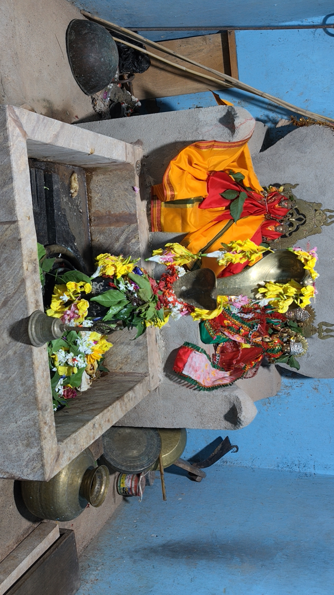
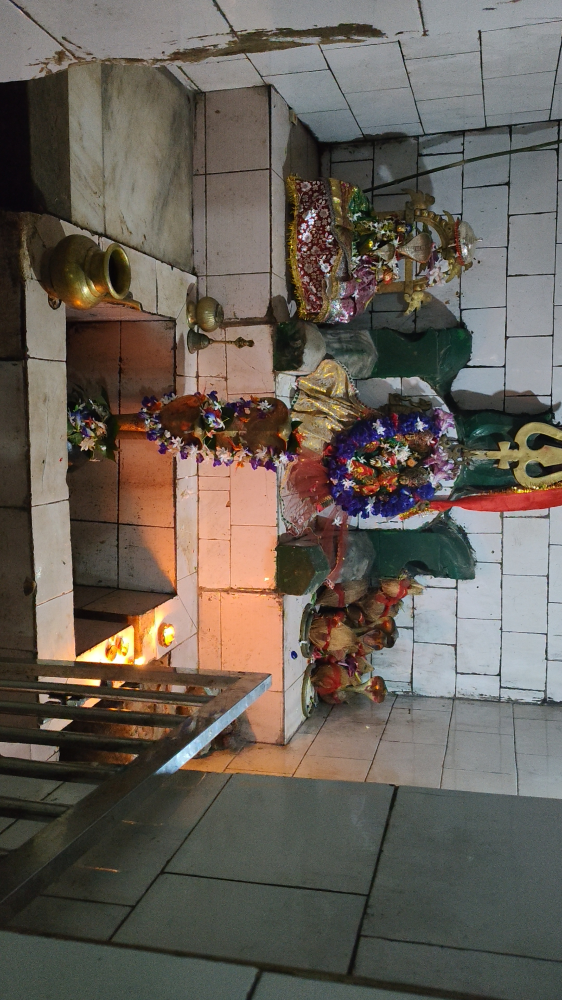
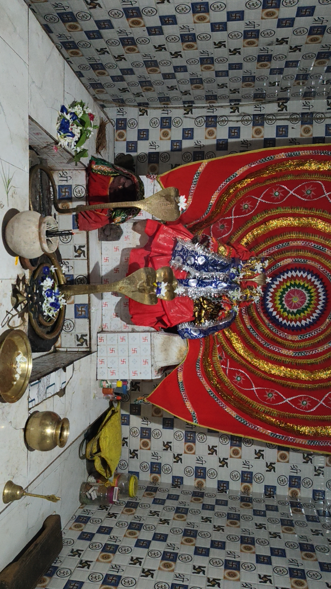
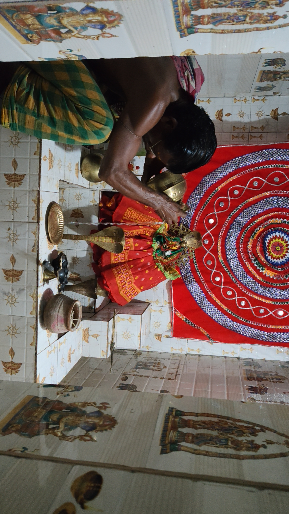
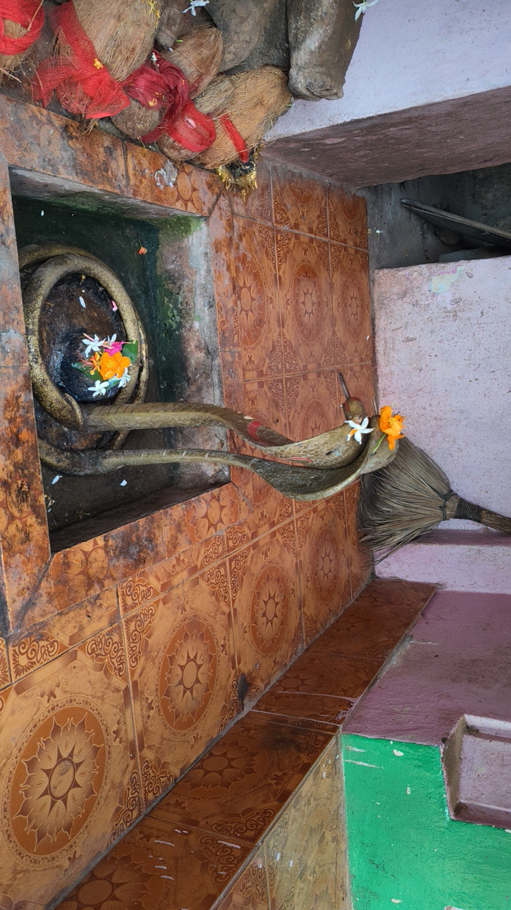
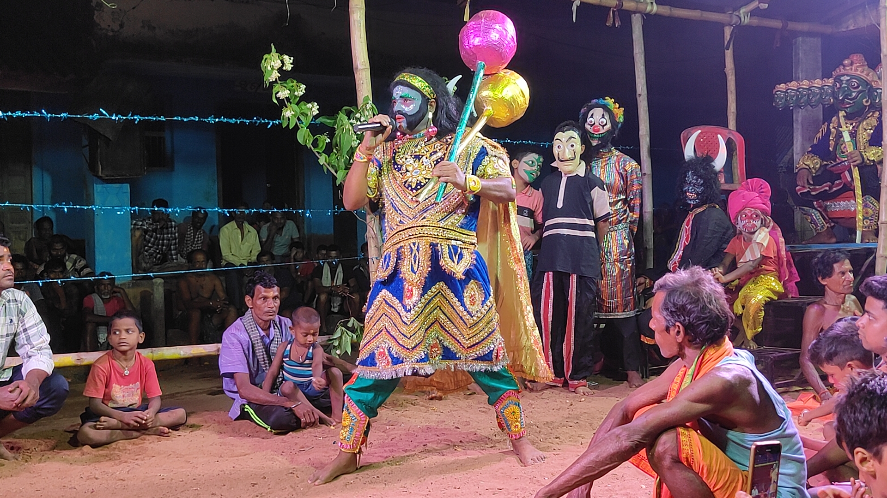

ସିକୋ ଇତିହାସ ପୁସ୍ତକ
Page 0 / 300
ସିକୋ ଗ୍ୟାଲେରୀ
ପବିତ୍ର ଶିବ ପୀଠ ଓ ମନ୍ଦିର ସମୂହ

ବାବା ତାରେଶ୍ୱର ଦେବ

ବାବା ଚନ୍ଦ୍ରଶେଖର ଦେବ

ବାବା ବାଙ୍କେଶ୍ୱର ଦେବ

ବାବା ନିଧିଶ୍ୱର ଦେବ

ବାବା ବିଶ୍ୱନାଥ ଦେବ
ପ୍ରାଚୀନ ମନ୍ଦିର ବେଢ଼ା
ପର୍ବପର୍ବାଣୀ ଓ ଗ୍ରାମ୍ୟ ଜୀବନ

ପ୍ରସିଦ୍ଧ ପର୍ବପର୍ବାଣୀ